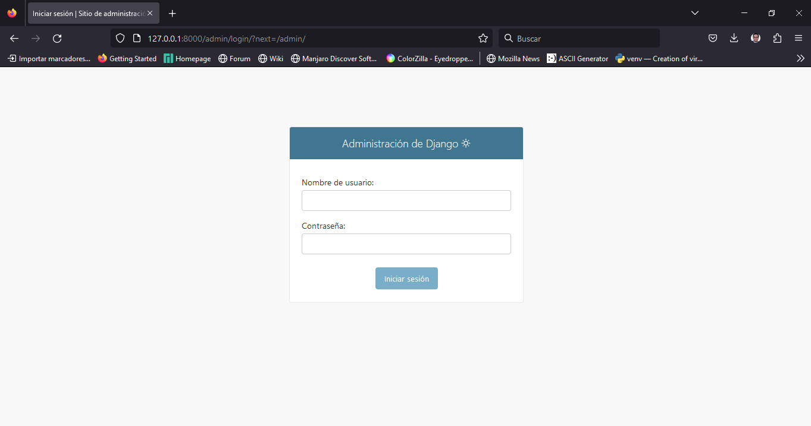
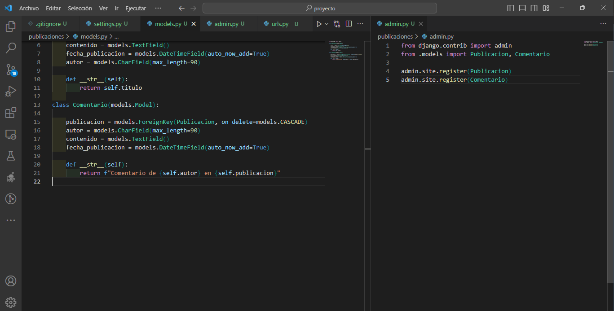

Curso de Django
Módulo 2: Modelos y Bases de Datos.
2023-07-20
Módulo 2: Modelos y Bases de Datos.
Diseño de Modelos en Django
En este diagrama, se muestra el flujo de diseño de modelos en Django.
# Diseño de Modelos en Django
+-----------------------+
| |
| Definir el modelo |
| como una clase |
| Python que hereda de |
| models.Model |
| |
+----+-------------+----+
| |
| |
v v
+-------------------+ +------------------+
| | | |
| Definir campos | | Definir métodos |
| y atributos | | adicionales |
| del modelo | | del modelo |
| | | |
+--------+----------+ +------+-----------+
| |
| |
v v
+--------------------+ +--------------------+
| | | |
| Aplicar migraciones| | Definir __str__ |
| para reflejar los | | método para |
| cambios en la | | representación |
| base de datos | | del modelo |
| | | |
+--------------------+ +--------------------+1. Definimos el Modelo.
En Django, los modelos son la base para diseñar la estructura de la base de datos de nuestra aplicación web.
Cada modelo representa una tabla en la base de datos y define los campos que estarán presentes en dicha tabla.
Los modelos son definidos como clases Python que heredan de models.Model, lo que permite que Django maneje automáticamente la creación y gestión de la base de datos.
Creación de un Modelo.
Para crear un modelo en Django, primero definimos una clase Python que representa la tabla en la base de datos. Por ejemplo, si deseamos crear un modelo para representar las publicaciones en nuestro blog, podemos definirlo de la siguiente manera:
from django.db import models
class Publicacion(models.Model):
titulo = models.CharField(max_length=200)
contenido = models.TextField()
fecha_publicacion = models.DateTimeField()En este ejemplo, hemos definido el modelo Publicacion con tres campos: titulo,
contenido y fecha_publicacion.
Cada campo se representa mediante un atributo de la clase, donde: models.CharField representa un campo de texto, models.TextField representa un campo de texto más largo y models.DateTimeField representa una fecha y hora.
2. Definir Métodos del Modelo.
Además de los campos, también podemos definir métodos en el modelo para realizar acciones específicas o para dar formato a los datos. Por ejemplo, podríamos agregar un método que nos devuelva una representación más legible de la publicación:
from django.db import models
class Publicacion(models.Model):
titulo = models.CharField(max_length=200)
contenido = models.TextField()
fecha_publicacion = models.DateTimeField()
def __str__(self):
return self.tituloEn este caso, hemos definido el método str que se ejecutará cuando necesitemos obtener una representación de texto del objeto Publicacion. En este caso, hemos decidido que la representación será simplemente el título de la publicación.
Para poder probar los cambios que hemos realizado vamos a registrar nuestro modelo en el archivo admin.py
3. Aplicar Migraciones.
Una vez que hemos definido nuestro modelo, necesitamos aplicar las migraciones para que los cambios se reflejen en la base de datos.
Con estos pasos, hemos diseñado nuestro modelo de Publicaciones en Django y aplicado las migraciones para crear la tabla correspondiente en la base de datos. Ahora estamos listos para utilizar nuestro modelo y almacenar datos en la base de datos.
Finalmente creamos un superusuario para acceder a la administración de nuestro proyecto.
Llenamos un pequeño formulario que nos pide: nombre de usuario, correo electrónico (no obligatorio), password, repeat again password.
Y listo para poder acceder a la administración de nuestro proyecto nos dirigimos a la siguiente url
De forma gráfica ingresamos nuestro usuario y contraseña creado.
Ejemplo de las clases “Blog” y “Comentario” en Django:
# En el archivo models.py de la aplicación "blog"
from django.db import models
class Blog(models.Model):
title = models.CharField(max_length=100)
content = models.TextField()
pub_date = models.DateTimeField(auto_now_add=True)
def __str__(self):
return self.title
class Comentario(models.Model):
blog = models.ForeignKey(Blog, on_delete=models.CASCADE)
author = models.CharField(max_length=50)
content = models.TextField()
pub_date = models.DateTimeField(auto_now_add=True)
def __str__(self):
return f"Comentario de {self.author} en {self.blog}"En este ejemplo, hemos definido dos clases:
La clase “Blog”: Representa una publicación en el blog y tiene tres campos:
“title” (título de la publicación),
“content” (contenido de la publicación) y
“pub_date” (fecha de publicación).
La fecha de publicación se establece automáticamente utilizando la función “auto_now_add=True”.
También hemos definido un método “str” para que al imprimir una instancia de la clase, se muestre el título de la publicación.
La clase “Comentario”: Representa un comentario en una publicación de blog específica y tiene cuatro campos:
“blog” (clave externa que se relaciona con el blog al que pertenece el comentario),
“author” (nombre del autor del comentario),
“content” (contenido del comentario) y
“pub_date” (fecha de publicación del comentario).
Al igual que en la clase “Blog”, hemos definido un método “str” para mostrar información útil al imprimir una instancia de la clase.
Migraciones de la Base de Datos
Las migraciones en Django son una forma de gestionar los cambios en la estructura de la base de datos de manera controlada y consistente. Representan los cambios en la estructura de la base de datos en forma de archivos Python y se utilizan para crear, modificar o eliminar tablas y campos.
Cuando definimos nuestros modelos en Django (como se mostró en el ejemplo de la clase “Blog” y “Comentario”), estamos describiendo la estructura de nuestras tablas en la base de datos. Sin embargo, antes de que estos modelos se puedan utilizar, Django necesita traducirlos en el lenguaje específico del motor de base de datos que estamos utilizando (por ejemplo, PostgreSQL, MySQL, SQLite, etc.).
Es aquí donde entran en juego las migraciones. Cuando creamos o modificamos modelos, Django genera automáticamente archivos de migración que contienen instrucciones para aplicar los cambios necesarios en la base de datos. Cada migración representa un paso en la evolución de la estructura de la base de datos.
Comandos para crear y aplicar migraciones:
Este comando se utiliza para crear una nueva migración a partir de los cambios detectados en los modelos. Cuando ejecutamos este comando, Django analiza los modelos definidos en nuestra aplicación y compara la estructura actual con la estructura de la última migración aplicada. Luego, genera una nueva migración que contiene las instrucciones para llevar la base de datos a su estado actual.
Una vez que hemos creado una o varias migraciones, utilizamos este comando para aplicar esas migraciones pendientes y modificar la base de datos de acuerdo con los cambios en los modelos. Django realiza las operaciones necesarias en la base de datos para reflejar la estructura actual de los modelos definidos en nuestra aplicación.
Es importante ejecutar estos comandos cada vez que realizamos cambios en los modelos para mantener la coherencia entre la estructura de la base de datos y la estructura definida en los modelos de Django.
Consultas a la Base de Datos con el ORM de Django
Cuando construimos aplicaciones web, a menudo necesitamos interactuar con una base de datos para almacenar y recuperar datos. Django facilita esta tarea mediante su Object-Relational Mapping (ORM). Pero, ¿Qué es exactamente el ORM y cómo podemos hacer consultas a la base de datos utilizando esta funcionalidad?
Object-Relational Mapping (ORM): Una forma amigable de interactuar con la base de datos.
Imagina que tienes una biblioteca y quieres mantener un registro de los libros y sus autores en una base de datos. Tradicionalmente, tendrías que escribir consultas SQL para agregar, actualizar o recuperar información. Sin embargo, con el ORM de Django, puedes utilizar objetos de Python para realizar estas tareas sin tener que escribir consultas SQL directamente. ¡Es como si el ORM tradujera automáticamente tus interacciones con objetos de Python a instrucciones SQL!
Ejemplo de Consulta con el ORM de Django
Supongamos que tienes un modelo Libro en Django con los campos titulo, autor, y anio_publicacion. Queremos obtener todos los libros publicados después de 2000 y mostrar sus títulos y autores.
from miapp.models import Libro
# Realizamos una consulta utilizando el ORM de Django
libros_recientes = Libro.objects.filter(anio_publicacion__gt=2000)
# Mostramos los resultados
for libro in libros_recientes:
print(f"Título: {libro.titulo}, Autor: {libro.autor}")En este ejemplo, la función filter() nos permite especificar un filtro para seleccionar los libros con el campo anio_publicacion mayor que 2000. Después, utilizamos un bucle for para recorrer los resultados y mostrar los títulos y autores de los libros.
Diagrama:
Diagrama de Consulta con ORM de Django
+--------------+
| Base de Datos|
+--------------+
|
v
+--------------+
| Modelo |
| (Libro) |
+--------------+
|
v
+--------------+
| Consulta |
| (filter) |
+--------------+
|
v
+--------------+
| Resultado |
+--------------+En el diagrama, el modelo Libro representa la estructura de la tabla en la base de datos. La consulta se realiza a través del ORM de Django, que traduce la interacción con el modelo en una consulta SQL y devuelve el resultado.
El ORM de Django nos permite realizar consultas de una manera más legible y amigable, lo que facilita enormemente el manejo de datos en nuestras aplicaciones web.
Relaciones entre Modelos.
Django permite establecer relaciones entre modelos utilizando claves foráneas y claves primarias.
Ejemplo de relación entre modelos de Usuario y Publicacion:
Ejemplo de Conexión del Proyecto Blog con Bases de Datos
A continuación, se presentará un ejemplo de configuración de Django para conectar el proyecto de blog a tres bases de datos diferentes: SQLite, MySQL y PostgreSQL.
1. SQLite:
SQLite es una base de datos incorporada en Django por defecto. No requiere configuración adicional para usarla, ya que Django creará automáticamente un archivo de base de datos SQLite en el directorio del proyecto.
# En el archivo settings.py del proyecto "mi_blog"
DATABASES = {
'default': {
'ENGINE': 'django.db.backends.sqlite3',
'NAME': BASE_DIR / 'db.sqlite3',
}
}2. MySQL:
Para utilizar MySQL como base de datos, necesitaremos instalar el controlador mysqlclient y configurar los detalles de conexión.
# En el archivo settings.py del proyecto "mi_blog"
DATABASES = {
'default': {
'ENGINE': 'django.db.backends.mysql',
'NAME': 'mi_blog_db',
'USER': 'mi_usuario',
'PASSWORD': 'mi_contraseña',
'HOST': 'localhost',
'PORT': '',
}
}3. PostgreSQL:
Para utilizar PostgreSQL como base de datos, necesitaremos instalar el controlador psycopg2 y configurar los detalles de conexión.
# En el archivo settings.py del proyecto "mi_blog"
DATABASES = {
'default': {
'ENGINE': 'django.db.backends.postgresql',
'NAME': 'mi_blog_db',
'USER': 'mi_usuario',
'PASSWORD': 'mi_contraseña',
'HOST': 'localhost',
'PORT': '',
}
}Tabla Comparativa de Ventajas y Desventajas
A continuación, se presenta una tabla comparativa de las ventajas y desventajas de cada base de datos:
|
Es importante tener en cuenta que la elección de la base de datos depende del contexto y las necesidades específicas del proyecto. En general, SQLite es ideal para aplicaciones pequeñas o prototipos, mientras que MySQL y PostgreSQL son más adecuados para aplicaciones web y empresariales que requieren mayor rendimiento y escalabilidad.
Uso de Formularios en Django
Los formularios en Django se utilizan para crear y manejar formularios HTML.
Django proporciona una clase ModelForm que genera automáticamente un formulario basado en el modelo.
Ejemplo de un formulario para el modelo de Comentario:
Ejemplo Práctico:
Diseño de un Modelo de Usuarios y Publicaciones en un Blog.
Importación de módulos necesarios:
Para definir los modelos en Django, primero importamos los módulos necesarios desde la biblioteca Django.
Definición del modelo “Usuario”:
El modelo de “Usuario” se crea mediante la herencia de la clase “AbstractUser” proporcionada por Django. Esto nos permite utilizar la funcionalidad de autenticación y autorización incorporada en Django. También podemos agregar campos adicionales según sea necesario.
En el modelo “Usuario”, podemos agregar campos adicionales según las necesidades específicas de nuestra aplicación. Al heredar de la clase “AbstractUser” proporcionada por Django, ya contamos con campos comunes para autenticación, como “username”, “email” y “password”.
Además de los campos heredados, algunos ejemplos de campos adicionales que podríamos agregar al modelo “Usuario” son:
Nombre completo: Podemos agregar un campo para almacenar el nombre completo del usuario.
class Usuario(AbstractUser):
# Campos heredados de AbstractUser
...
# Campo adicional
nombre_completo = models.CharField(max_length=255)Fecha de nacimiento: Podemos incluir un campo para registrar la fecha de nacimiento del usuario.
class Usuario(AbstractUser):
# Campos heredados de AbstractUser
...
# Campo adicional
fecha_nacimiento = models.DateField()Biografía: Podemos permitir que los usuarios agreguen una breve biografía sobre ellos mismos.
class Usuario(AbstractUser):
# Campos heredados de AbstractUser
...
# Campo adicional
biografia = models.TextField(blank=True, null=True)Imagen de perfil: Podemos agregar un campo para que los usuarios carguen una imagen de perfil.
class Usuario(AbstractUser):
# Campos heredados de AbstractUser
...
# Campo adicional
imagen_perfil = models.ImageField(upload_to='imagenes_perfil/', blank=True, null=True)Estos son solo algunos ejemplos de los campos adicionales que podríamos agregar al modelo “Usuario”. La elección de los campos depende de los requisitos específicos de la aplicación y qué información adicional deseamos almacenar para nuestros usuarios.
Django proporciona una amplia variedad de tipos de campos para adaptarse a diferentes tipos de datos y necesidades.
Definición del modelo “Publicacion”:
El modelo “Publicacion” se crea como una subclase de “models.Model”. Aquí definimos los campos que representarán los atributos de una publicación en el blog, como “titulo”, “contenido” y “fecha_publicacion”. Cada campo es una instancia de una clase de campo de Django que define el tipo y las propiedades del campo.
# models.py
class Publicacion(models.Model):
titulo = models.CharField(max_length=200)
contenido = models.TextField()
fecha_publicacion = models.DateTimeField()Método “str”:
En el modelo “Publicacion”, hemos definido el método “str” que devuelve el título de la publicación cuando se imprime una instancia de la clase. Esto hace que sea más fácil identificar las publicaciones en el administrador de Django y en cualquier otra parte donde se muestren objetos de la clase “Publicacion”.
# models.py
class Publicacion(models.Model):
# Campos de la publicación...
def __str__(self):
return self.tituloCon estos pasos, hemos definido los modelos “Usuario” y “Publicacion” en Django. Estos modelos representarán las tablas “Usuario” y “Publicacion” en la base de datos y nos permitirán interactuar con ellos mediante el ORM de Django.
Actividad Práctica:
Agrega un Campo Adicional al Modelo de Publicaciones
Agrega un Campo Adicional al Modelo de Publicaciones y Realiza la Migración Correspondiente
En el modelo de Publicaciones, agrega un nuevo campo “imagen” de tipo “ImageField”.
Crea una migración para aplicar los cambios al modelo usando el comando
Aplica la migración a la base de datos.
Resolución de la Actividad Práctica.
Paso 1: Agregar un Campo Adicional al Modelo de Publicaciones
En el archivo “models.py” de la aplicación “blog”, agregamos un nuevo campo llamado “imagen” de tipo “ImageField” al modelo “Publicacion”. Esto nos permitirá almacenar imágenes relacionadas con cada publicación.
# models.py
from django.db import models
class Publicacion(models.Model):
titulo = models.CharField(max_length=200)
contenido = models.TextField()
fecha_publicacion = models.DateTimeField()
imagen = models.ImageField(upload_to='publicaciones/', blank=True, null=True)
def __str__(self):
return self.tituloPaso 2: Crear una Migración para Aplicar los Cambios
Después de agregar el nuevo campo “imagen” al modelo, necesitamos crear una migración para aplicar los cambios a la base de datos. Django nos proporciona un comando para generar automáticamente la migración.
Paso 3: Aplicar la Migración a la Base de Datos
Una vez que se ha creado la migración, la aplicamos a la base de datos con el siguiente comando:
Con estos pasos, hemos agregado con éxito un campo adicional “imagen” al modelo de Publicaciones y hemos aplicado la migración a la base de datos para reflejar el cambio. Ahora, cada publicación en el blog tendrá un campo para asociar una imagen, lo que mejorará la experiencia visual para los usuarios.
Extra.
Para poder manejar el modelo de Publicaciones desde la administración de Django, es necesario registrar el modelo en el archivo “admin.py” de la aplicación “blog”. De esta manera, podremos acceder a las publicaciones y administrarlas desde la interfaz de administración de Django.
Paso 4: Registro del Modelo en el Administrador de Django
En el archivo “admin.py” de la aplicación “blog”, registramos el modelo “Publicacion” para que sea accesible desde la interfaz de administración.
# admin.py
from django.contrib import admin
from .models import Publicacion
admin.site.register(Publicacion)Con este registro, el modelo “Publicacion” estará disponible en la interfaz de administración de Django.
Ahora, cuando ingreses a la URL “/admin/” en tu aplicación, podrás iniciar sesión como superusuario y ver la sección de “Publicacions”, donde podrás agregar, editar y eliminar publicaciones desde la interfaz de administración.
Esto facilitará el manejo de las publicaciones sin tener que acceder directamente a la base de datos.
Conclusión.
Con esto, hemos completado el Módulo 2 de Modelos y Bases de Datos en Django.
Has aprendido a diseñar modelos en Django, realizar migraciones de la base de datos, hacer consultas utilizando el ORM de Django, establecer relaciones entre modelos y usar formularios en Django.
En el próximo módulo, continuaremos explorando más características de Django, como vistas y plantillas.